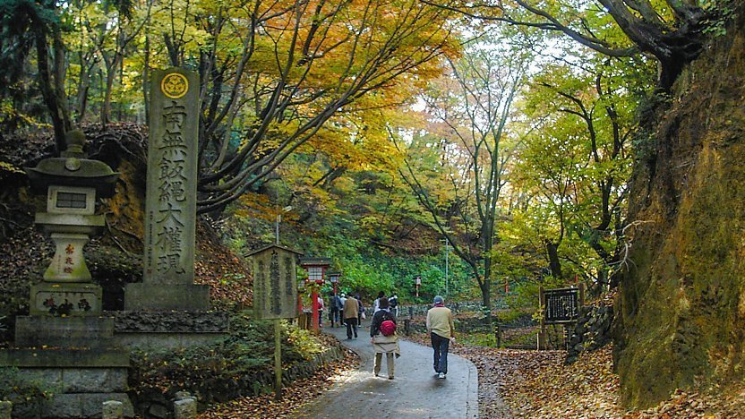

다카오 산 in 도쿄도 하치오지시 다카오마치


2020.06.24 Posted
등산 초보자도 당일치기 여행자도 안심하고 짧게 이용할 수 있는 산.
신주쿠 역에서 약 50분이라는 도심에서 오기에도 편리한 다카오 산. 게이오 선 '다카오산구치' 역에서 등산할 수 있는데다 해발 599m라 여유롭게 산행을 즐길 수 있는 인기 명소입니다. 산기슭에서 출발하는 3가지의 루트는 어떤 루트를 이용해도 1시간 반 정도면 정상에 도착하기 때문에 초보자도 부담 없이 오를 수 있으며 등산로에는 다양한 식물과 동물, 곤충 등이 서식하고 있어 계절마다 그 모습을 관찰할 수 있습니다. 다카오 산 주변에 서식하는 고등식물은 약 1,300종류이며, 다카오 산 특유의 식물을 찾는 것도 산행의 묘미입니다.
또한, 산기슭에서 케이블카와 리프트를 이용하면 단숨에 472m 부근까지 이동할 수도 있고, 케이블카 다카오 산 역 근처에 있는 전망대에서 바라보는 풍경은 뛰어난 전망을 자랑하여 도심의 초고층 빌딩은 물론 요코하마 방면까지 한눈에 조망할 수 있습니다. 산 정상 부근까지 올라가면 남알프스와 후지 산이 보이는 커다란 파노라마를 즐길 수 있습니다. 등산로 중간에는 가벼운 식사와 기념품을 판매하는 매점도 마련되어 있습니다.
주변 역 명 : 다카오산구치 역 / 게이오 다카오선